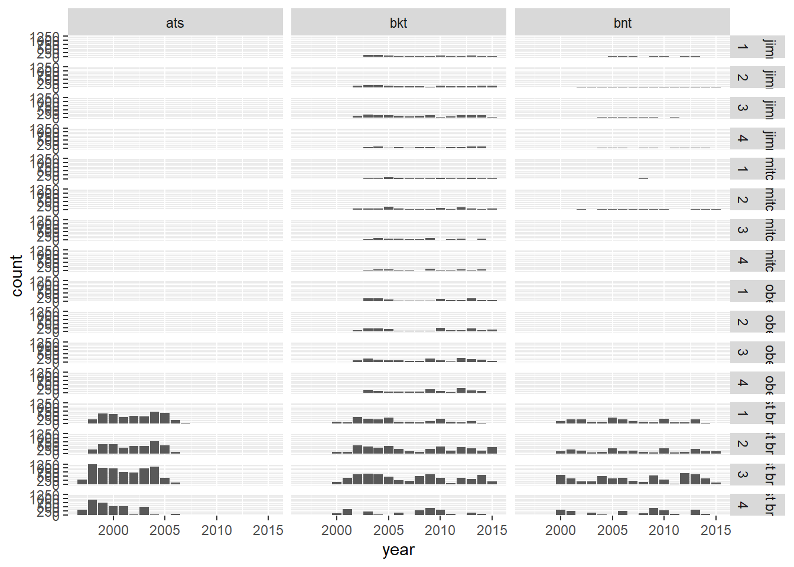

Chapter 2 Get data
The server hosting the data is named osensei and is at UMass (osensei.cns.umass.edu). It can be accessed using functions in the ‘getWBData’ package. Use
devtools::install_github('Conte-Ecology/westBrookData/getWBData') to install. Most of the functions will run reconnect() to connect to the server with your username and password. Run reconnect() from the console to connect if necessary. Use conDplyr to see the list of available tables on the server. Details about the ‘getWBData’ package are
here.
We have two types of databases: Environmental and fish
The environmental database contains daily mean temperature and flow data. Flow data are from a flow extension model and are not tributary-specific. Temperature data are from tributary-specific loggers.
There are four main fish databases we want to create:
1. cdWB_electro0 West Brook electrofishing data, 3 species (brook trout, brown trout and Atlantic salmon), tagged and untagged fish
2. cdWB_CMR0 West Brook electrofishing data formatted for Capture-Mark-Recapture analysis for tagged individuals
3. cdWB_wanding0 West Brook wanding (portable antenna) data, all tagged salmonids
4. cdWB_antenna0 West Brook stationary antenna data, all tagged salmonids
The “0” at the end of these file names indicates that they are the initial files that will be wrangled in the next step (next chapter). “cd” stands for “core data”.
The getNew_... variables determine whether the data are retrieved from the server. Change to ‘TRUE’ to get a new data frame, e.g. when there are new data on the server.
getNew_envDataWB <- FALSE
getNew_cdWB_electro0 <- FALSE
getNew_cdWB_CMR0 <- FALSE
getNew_cdWB_wanding0 <- FALSE
getNew_cdWB_antenna0 <- FALSE2.1 Get environmental data
library(tidyverse)if(getNew_envDataWB) {
reconnect()
envDataWB <- tbl(conDplyr, "data_daily_temperature") %>%
collect(n = Inf) %>%
full_join(tbl(conDplyr, "data_flow_extension") %>%
collect(n = Inf), by = c("river", "date")) %>%
select(-source) %>%
rename(temperature = daily_mean_temp, flow = qPredicted) %>%
mutate(dateDate = as_date(date),
yday = yday(dateDate))
save(envDataWB, file = './data/envDataWB.RData')
} else {
load(file = './data/envDataWB.RData')
}
str(envDataWB)## tibble [32,189 × 7] (S3: tbl_df/tbl/data.frame)
## $ river : chr [1:32189] "wb jimmy" "wb jimmy" "wb jimmy" "wb jimmy" ...
## $ date : POSIXct[1:32189], format: "1997-05-14" "1997-05-15" "1997-05-16" "1997-05-17" ...
## $ temperature : num [1:32189] 11.57 10.4 10.55 8.84 9.09 ...
## $ daily_max_temp: num [1:32189] 11.6 12.3 11.9 10.2 11.6 ...
## $ daily_min_temp: num [1:32189] 11.57 8.96 9.73 7.74 7.45 ...
## $ flow : num [1:32189] NA NA NA NA NA NA NA NA NA NA ...
## $ dateDate : Date[1:32189], format: "1997-05-14" "1997-05-15" "1997-05-16" "1997-05-17" ...ggplot(envDataWB, aes(date, flow)) +
geom_point() +
facet_wrap(~river)
ggplot(envDataWB, aes(date, temperature)) +
geom_point(size = 0.5) +
facet_wrap(~river)
need to add getting environmental data here
2.2 Electrofishing data
This section retrieves electrofishing data, including both tagged and untagged fish. Fish were untagged if they were too small (< 60 mm, 2 g wet weight) or were captured outside of the core study area (tributaries and 47 sections of the mainstem West Brook).
2.2.1 Get data
# default values for createCoreData()
# function (sampleType = "electrofishing", baseColumns = T,
# columnsToAdd = NULL, includeUntagged = F, whichDrainage = "west")
if(getNew_cdWB_electro0) {
cdWB_electro0 <- createCoreData(
sampleType = "electrofishing", #"stationaryAntenna","portableAntenna"
columnsToAdd = c("sampleNumber",
"river",
"survey",
"pass",
"observedLength",
"observedWeight",
"comments"),
includeUntagged = TRUE,
whichDrainage = "west"
) %>%
addTagProperties(
columnsToAdd = c("cohort",
"species",
"dateEmigrated",
"sex",
"species"
)
) %>%
dplyr::filter(species %in% c( "bkt","bnt","ats"),
area %in% c("trib","inside","below","above"),
!is.na(sampleNumber)) %>%
addSampleProperties() %>%
addEnvironmental()
save(cdWB_electro0, file = './data/cdWB_electro0.RData')
} else {
load(file = './data/cdWB_electro0.RData')
}
str(cdWB_electro0)## tibble [91,103 × 22] (S3: tbl_df/tbl/data.frame)
## $ tag : chr [1:91103] "00088cbed0" "00088cbed3" "00088cbed4" "00088cbed4" ...
## $ detectionDate : POSIXct[1:91103], format: "2013-03-25 00:00:00" "2012-06-07 09:03:00" "2013-03-29 10:08:00" "2013-06-25 14:51:00" ...
## $ sampleName : chr [1:91103] "84" "81" "84" "85" ...
## $ sampleNumber : num [1:91103] 73 70 73 74 70 71 73 79 80 71 ...
## $ river : chr [1:91103] "wb obear" "west brook" "west brook" "west brook" ...
## $ section : chr [1:91103] "7" "1" "40" "44" ...
## $ area : chr [1:91103] "trib" "inside" "inside" "inside" ...
## $ observedLength : num [1:91103] 62 62 109 154 113 120 147 70 74 86 ...
## $ survey : chr [1:91103] "shock" "shock" "shock" "shock" ...
## $ pass : num [1:91103] 1 1 1 1 1 1 1 1 1 1 ...
## $ observedWeight : num [1:91103] 1.9 2.7 12.6 41.3 15.5 18.3 30.4 3.5 4.8 6.7 ...
## $ comments : chr [1:91103] "additional genetic sample" NA NA NA ...
## $ cohort : num [1:91103] 2012 2012 2012 2012 2011 ...
## $ species : chr [1:91103] "bkt" "bkt" "bkt" "bkt" ...
## $ dateEmigrated : Date[1:91103], format: NA NA NA NA ...
## $ sex : chr [1:91103] NA NA NA NA ...
## $ year : num [1:91103] 2013 2012 2013 2013 2012 ...
## $ season : num [1:91103] 1 2 1 2 2 3 1 3 4 3 ...
## $ proportionSampled: num [1:91103] 1 1 1 1 1 1 1 1 1 1 ...
## $ lagDetectionDate : POSIXct[1:91103], format: NA NA "2013-06-25 14:51:00" NA ...
## $ meanTemperature : num [1:91103] NaN NaN 10.7 NaN 16.5 ...
## $ meanFlow : num [1:91103] NaN NaN 0.5247 NaN 0.0338 ...2.2.2 Wrangle data
This section takes cdWB_electro0 and cleans it to create cdWB_electro.
reclean_cdWB_electro <- FALSEif(reclean_cdWB_electro){
drainage <- 'west'
# functions in getPrepareWBData library
cdWB_electro <- cdWB_electro0 %>%
cleanData(drainage) %>%
mergeSites(drainage) %>%
addNPasses(drainage) %>%
mutate(drainage = drainage)
save(cdWB_electro, file = './data/cdWB_electro.RData')
} else {
load(file = './data/cdWB_electro.RData')
}2.2.3 Explore data
ggplot(cdWB_electro, aes(observedLength, observedWeight, color = species)) +
geom_point(alpha = 0.1) +
scale_x_log10() +
scale_y_log10() +
theme_publication() +
facet_wrap(~ species)
lwReg <- cdWB_electro %>%
nest_by(species) %>%
mutate(reg = list(lm(log(observedWeight) ~ log(observedLength), data = data)))
lwReg %>% summarise(broom::tidy(reg)) ## # A tibble: 6 x 6
## # Groups: species [3]
## species term estimate std.error statistic p.value
## <chr> <chr> <dbl> <dbl> <dbl> <dbl>
## 1 ats (Intercept) -11.4 0.00942 -1210. 0
## 2 ats log(observedLength) 3.00 0.00208 1442. 0
## 3 bkt (Intercept) -11.5 0.00621 -1859. 0
## 4 bkt log(observedLength) 3.02 0.00140 2155. 0
## 5 bnt (Intercept) -11.5 0.00686 -1670. 0
## 6 bnt log(observedLength) 3.01 0.00149 2023. 0lwReg %>% summarise(broom::glance(reg))## # A tibble: 3 x 13
## # Groups: species [3]
## species r.squared adj.r.squared sigma statistic p.value df logLik AIC BIC deviance df.residual nobs
## <chr> <dbl> <dbl> <dbl> <dbl> <dbl> <dbl> <dbl> <dbl> <dbl> <dbl> <int> <int>
## 1 ats 0.989 0.989 0.0945 2080611. 0 1 22663. -45319. -45295. 215. 24092 24094
## 2 bkt 0.991 0.991 0.112 4643341. 0 1 32555. -65105. -65079. 537. 42490 42492
## 3 bnt 0.996 0.996 0.0858 4092957. 0 1 18345. -36683. -36660. 130. 17694 176962.3 Capture-recapture data
getNew_encounterHistories <- TRUE
# maximum ageInSamples for both createCmrData and getEH
maxAgeInSamples <- 122.3.1 Temporary home for updated functions
addEnvironmental <- function(coreData, sampleFlow = F, funName = "mean") {
func <- get(funName)
whichDrainage <- "west"
if (all(!unique(coreData$river) %in% c("west brook", "wb jimmy",
"wb mitchell", "wb obear"))) {
whichDrainage <- "stanley"
}
if (whichDrainage == "west") {
envData <- tbl(conDplyr, "data_daily_temperature") %>%
collect(n = Inf) %>%
full_join(tbl(conDplyr, "data_flow_extension") %>%
collect(n = Inf), by = c("river", "date")) %>%
dplyr::select(-source) %>%
dplyr::filter(date <= max(coreData$detectionDate),
date >= min(coreData$detectionDate)) %>%
rename(temperature = daily_mean_temp, flow = qPredicted) %>%
data.frame()
}
else {
envData <- tbl(conDplyr, "stanley_environmental") %>%
filter(section == 11) %>%
dplyr::select(datetime, temperature, depth) %>%
collect(n = Inf) %>%
rename(flow = depth, date = datetime) %>%
data.frame()
warning("Depth was inserted into flow column because that is what is available in Stanley")
}
coreData <- coreData %>%
group_by(tag) %>%
arrange(ageInSamples) %>%
mutate(lagDetectionDate = lead(detectionDate)) %>%
ungroup()
if (whichDrainage == "west") {
getIntervalMean <- function(start, end, r, e, fun = func) {
d <- envData$date
if (e == "Temperature") {
envCol <- "temperature"
if (is.na(r))
meanVar <- fun(envData[d >= start & d <= end, envCol], na.rm = T)
if (!is.na(r))
meanVar <- fun(envData[d >= start & d <= end & envData$river == r, envCol], na.rm = T)
}
# will need to make this river-specific
if (e == "Flow") {
envCol <- "flow"
meanVar <- fun(envData[d >= start & d <= end, envCol], na.rm = T)
}
return(meanVar)
}
coreDataUniqueDates <- coreData %>%
dplyr::select(river, detectionDate, lagDetectionDate) %>%
unique() %>%
group_by(river, detectionDate, lagDetectionDate) %>%
mutate(meanTemperature = getIntervalMean(detectionDate, lagDetectionDate, river, "Temperature"),
meanFlow = getIntervalMean(detectionDate, lagDetectionDate, river, "Flow")) %>%
ungroup()
coreData <- left_join(coreData, coreDataUniqueDates,
by = c("detectionDate", "river", "lagDetectionDate"))
}
else {
getIntervalMean <- function(start, end, e, fun = func) {
d <- envData$date
meanEnv <- fun(envData[d >= start & d <= end, tolower(e)],
na.rm = T)
return(meanEnv)
}
coreDataUniqueDates <- coreData %>%
dplyr::select(detectionDate, lagDetectionDate) %>%
unique() %>%
group_by(detectionDate, lagDetectionDate) %>%
mutate(meanTemperature = getIntervalMean(detectionDate, lagDetectionDate, "Temperature"),
meanFlow = getIntervalMean(detectionDate, lagDetectionDate, "Flow")) %>%
ungroup()
coreData <- left_join(coreData, coreDataUniqueDates,
by = c("detectionDate", "lagDetectionDate"))
}
if (sampleFlow) {
coreData <- coreData %>%
mutate(date = as.Date(detectionDate)) %>%
filter(enc == 1) %>% dplyr::select(sampleName, date) %>%
group_by(sampleName, date) %>% summarize(n = n()) %>%
ungroup() %>%
left_join(envData %>%
filter(!is.na(flow)) %>%
mutate(date = as.Date(date)) %>%
dplyr::select(date, flow) %>%
rename(flowForP = flow) %>%
unique(), by = c("date")) %>%
group_by(sampleName) %>% summarize(flowForP = sum(flowForP * n)/(sum(n))) %>%
ungroup() %>%
right_join(coreData, by = "sampleName")
}
names(coreData)[which(names(coreData) == "meanTemperature")] <- paste0(funName, "Temperature")
names(coreData)[which(names(coreData) == "meanFlow")] <- paste0(funName, "Flow")
return(coreData)
}
getKnown <- function(x) {
firstObs <- min(which(x == 1))
lastObs <- max(which(x == 1))
known <- rep(0, length(x))
known[firstObs:lastObs] <- 1
if (lastObs != length(known)) {
known[(lastObs + 1):length(known)] <- NA
}
return(known)
}
addKnownZ2 <- function(d) {
d %>%
group_by(tag) %>%
arrange(sampleNumber) %>%
mutate(knownZ = getKnown(enc)) %>%
ungroup() %>%
arrange(tag, sampleNumber)
}
addFirstLast <- function(d){
firstLast <- d %>%
group_by(tag) %>%
filter(knownZ == 1) %>%
summarize(firstObserved = min(sampleNumber, na.rm = TRUE),
lastObserved = max(sampleNumber, na.rm = TRUE)) %>%
ungroup()
left_join(d, firstLast) %>%
mutate(isFirstObserved = sampleNumber == firstObserved,
isLastObserved = sampleNumber == lastObserved)
}
fillRiver <- function (data, location = T){
fillLocation <- function(location) {
known <- which(!is.na(location))
unknown <- which(is.na(location))
nKnown <- length(unique(location[known]))
if (nKnown == 1) {
location[unknown] <- location[known[1]]
}
else {
for (i in unknown) {
location[i] <- location[known[max(which(i > known))]]
}
}
return(location)
}
if (location) {
data <- data %>%
group_by(tag) %>%
mutate(river = fillLocation(river)) %>%
ungroup()
}
return(data)
}
scale_this <- function(x){
(x - mean(x, na.rm = TRUE)) / sd(x, na.rm = TRUE)
}
scaleEnvData <- function(d){
tmp <- d %>%
group_by(river, season) %>%
summarize(meanMeanFlow = mean(meanFlow, na.rm = TRUE),
sdMeanFlow = sd(meanFlow, na.rm = TRUE),
meanMeanTemperature = mean(meanTemperature, na.rm = TRUE),
sdMeanTemperature = sd(meanTemperature, na.rm = TRUE)
) %>%
ungroup()
out <- left_join(d, tmp) %>%
mutate(
meanFlowScaled = (meanFlow - meanMeanFlow) / sdMeanFlow,
meanTemperatureScaled = (meanTemperature - meanMeanTemperature) / sdMeanTemperature
)
}
getNeverCaptured <- function(d, maxOccasionValue){
d %>%
#filter(ageInSamples > 0 & ageInSamples <= maxOccasionValue) %>%
filter(ageInSamples %in% 1:maxOccasionValue) %>%
group_by(tag) %>%
summarize(sumEnc = sum(enc, na.rm = TRUE)) %>%
filter(sumEnc == 0) %>%
dplyr::select(tag)
}
addRiverTagged <- function(d){
d1 <- d %>%
filter(isFirstObserved) %>%
mutate(riverTagged = river) %>%
dplyr::select(tag, riverTagged)
return(left_join(d, d1))
}
addIsYOY <- function(d){
d %>%
mutate(isYOY = ifelse(ageInSamples <= 3, 1, 2))
}
`%notin%` <- Negate(`%in%`)2.3.2 Get data
West Brook electrofishing data formatted for Capture-Mark-Recapture analysis for tagged individuals
#source('./rForSourcing/envFunctions.R')
if(getNew_cdWB_CMR0) {
cdWB_CMR0 <-
createCoreData(
sampleType = "electrofishing", #"stationaryAntenna","portableAntenna"),
whichDrainage = "west",
columnsToAdd =
c("sampleNumber",
"river",
"riverMeter",
"survey",
"pass",
'observedLength',
'observedWeight')
) %>%
addTagProperties(
columnsToAdd =
c("cohort",
"species",
"dateEmigrated",
"sex",
"species")
) %>%
dplyr::filter(!is.na(tag),
area %in% c("trib","inside","below","above"),
!is.na(sampleNumber)
) %>%
createCmrData(maxAgeInSamples = maxAgeInSamples + 1, # +1 so we get env data for the last interval
inside = F,
censorDead = F,
censorEmigrated = F) %>% # may want to change censorEmigrated = T to = F
# sample 83 is the last tagging sample
filter(sampleNumber <= 83) %>%
addSampleProperties() %>%
addEnvironmental() %>%
# these functions do not work for CMR data - they separate out shock and non-shock samples
#addEnvironmentalDaily() %>%
#addEnvironmentalInterval() %>%
addKnownZ2() %>%
addFirstLast() %>%
fillRiver() %>%
addRiverTagged() %>%
scaleEnvData() %>%
addIsYOY()
save(cdWB_CMR0, file = './data/cdWB_CMR0.RData')
#write.csv(cdWB_CMR0, file = './data/cdWB_CMR0.csv')
} else {
load(file = './data/cdWB_CMR0.RData')
}
str(cdWB_CMR0)## tibble [321,788 × 38] (S3: tbl_df/tbl/data.frame)
## $ cohort : num [1:321788] 2012 2012 2012 2012 2012 ...
## $ tag : chr [1:321788] "00088cbed0" "00088cbed0" "00088cbed0" "00088cbed0" ...
## $ detectionDate : POSIXct[1:321788], format: "2013-03-25 00:00:00" "2013-06-05 00:00:00" "2013-09-18 00:00:00" "2013-11-19 00:00:00" ...
## $ sampleName : chr [1:321788] "84" "85" "86" "87" ...
## $ sampleNumber : num [1:321788] 73 74 75 76 77 78 79 80 81 82 ...
## $ river : chr [1:321788] "wb obear" "wb obear" "wb obear" "wb obear" ...
## $ section : chr [1:321788] "7" NA NA NA ...
## $ area : chr [1:321788] "trib" NA NA NA ...
## $ observedLength : num [1:321788] 62 NA NA NA NA NA NA NA NA NA ...
## $ survey : chr [1:321788] "shock" NA NA NA ...
## $ pass : num [1:321788] 1 NA NA NA NA NA NA NA NA NA ...
## $ observedWeight : num [1:321788] 1.9 NA NA NA NA NA NA NA NA NA ...
## $ species : chr [1:321788] "bkt" "bkt" "bkt" "bkt" ...
## $ dateEmigrated : Date[1:321788], format: NA NA NA NA ...
## $ sex : chr [1:321788] NA NA NA NA ...
## $ enc : num [1:321788] 1 0 0 0 0 0 0 0 0 0 ...
## $ ageInSamples : num [1:321788] 3 4 5 6 7 8 9 10 11 12 ...
## $ sampleIndex : num [1:321788] 63 64 65 66 67 68 69 70 71 72 ...
## $ tagIndex : num [1:321788] 1 1 1 1 1 1 1 1 1 1 ...
## $ year : num [1:321788] 2013 2013 2013 2013 2014 ...
## $ season : num [1:321788] 1 2 3 4 1 2 3 4 1 2 ...
## $ proportionSampled : num [1:321788] 1 NA NA NA NA NA NA NA NA NA ...
## $ lagDetectionDate : POSIXct[1:321788], format: "2013-06-05 00:00:00" "2013-09-18 00:00:00" "2013-11-19 00:00:00" "2014-04-04 00:00:00" ...
## $ meanTemperature : num [1:321788] 8.62 16.51 9.44 0.94 10.52 ...
## $ meanFlow : num [1:321788] 0.38874 0.30331 0.00882 0.31319 0.58363 ...
## $ knownZ : num [1:321788] 1 NA NA NA NA NA NA NA NA NA ...
## $ firstObserved : num [1:321788] 73 73 73 73 73 73 73 73 73 73 ...
## $ lastObserved : num [1:321788] 73 73 73 73 73 73 73 73 73 73 ...
## $ isFirstObserved : logi [1:321788] TRUE FALSE FALSE FALSE FALSE FALSE ...
## $ isLastObserved : logi [1:321788] TRUE FALSE FALSE FALSE FALSE FALSE ...
## $ riverTagged : chr [1:321788] "wb obear" "wb obear" "wb obear" "wb obear" ...
## $ meanMeanFlow : num [1:321788] 0.409 0.137 0.307 0.464 0.409 ...
## $ sdMeanFlow : num [1:321788] 0.155 0.126 0.246 0.113 0.155 ...
## $ meanMeanTemperature : num [1:321788] 10.39 16.23 8.42 1.65 10.39 ...
## $ sdMeanTemperature : num [1:321788] 1.202 0.711 1.455 0.616 1.202 ...
## $ meanFlowScaled : num [1:321788] -0.129 1.313 -1.215 -1.33 1.124 ...
## $ meanTemperatureScaled: num [1:321788] -1.472 0.402 0.7 -1.149 0.105 ...
## $ isYOY : num [1:321788] 1 2 2 2 2 2 2 2 2 2 ...2.3.3 Make encounter history files
# https://stackoverflow.com/questions/69583424/using-tidy-eval-for-multiple-arbitrary-filter-conditions
# Assumes LHS is the name of a variable and OP is
# the name of a function
op_call <- function(op, lhs, rhs) {
call(op, sym(lhs), rhs)
}
ehFilter <- function(data, cols, ops, vals) {
exprs <- purrr::pmap(list(ops, cols, vals), op_call)
data %>% dplyr::filter(!!!exprs)
}
# var is the variable to put in the encounter history (e.g. 'enc' or 'temp')
# occasionVar is now fixed to ageInSamples
# maxOccasionValue is the maximum value for occasion columns, in units of 'occasionVar'
getEHDataWide_AIS <- function(d, cols, ops, vals, var, maxOccasionValue, valuesFill = 0){
d %>%
ehFilter(cols, ops, vals) %>%
#filter(ageInSamples > 0, ageInSamples <= maxOccasionValue) %>%
arrange(ageInSamples) %>% #need this to get correct order of columns.
pivot_wider(
id_cols = tag,
names_from = ageInSamples,
names_prefix = "ais_",
values_from = eval(substitute(var)),
values_fill = valuesFill
)
}
getEH_AIS <- function(dIn, cols, ops, vals, maxOccasionValue, maxIndexByCohort = 1E10){
d <- dIn %>%
#filter(ageInSamples > 0, ageInSamples <= maxOccasionValue)
filter(ageInSamples %in% 1:maxOccasionValue)
# Fish with no observed occasions
neverCaptured <- getNeverCaptured(d, maxOccasionValue)
d <- d %>%
filter(tag %notin% neverCaptured$tag)
# limit data to first 'maxIndexByCohort' individuals for each cohort
d <- d %>%
group_by(cohort) %>%
mutate(indexByCohort = rleid(tag)) %>%
filter(indexByCohort <= maxIndexByCohort) %>%
ungroup()
encWide <- getEHDataWide_AIS(d, cols, ops, vals, "enc", maxOccasionValue, valuesFill = 0)
eh <- as.matrix(encWide %>% dplyr::select(-tag), nrow = nrow(encWide), ncol = ncol(encWide) - 1)
flowFill <- 0
flowWide <- getEHDataWide_AIS(d, cols, ops, vals, "meanFlowScaled", maxOccasionValue, valuesFill = flowFill)
flowMatrix <- as.matrix(flowWide %>% dplyr::select(-tag), nrow = nrow(flowWide), ncol = ncol(flowWide) - 1)
flowMatrix <- ifelse(is.finite(flowMatrix), flowMatrix, flowFill)
temperatureFill <- 0
temperatureWide <- getEHDataWide_AIS(d, cols, ops, vals, "meanTemperatureScaled", maxOccasionValue, valuesFill = temperatureFill)
temperatureMatrix <- as.matrix(temperatureWide %>% dplyr::select(-tag), nrow = nrow(temperatureWide), ncol = ncol(temperatureWide) - 1)
temperatureMatrix <- ifelse(is.finite(temperatureMatrix), temperatureMatrix, temperatureFill)
riverWide <- getEHDataWide_AIS(d, cols, ops, vals, "river", maxOccasionValue, valuesFill = "none")
riverMatrix <- as.matrix(riverWide %>% dplyr::select(-tag), nrow = nrow(riverWide), ncol = ncol(riverWide) - 1)
isYOYWide <- getEHDataWide_AIS(d, cols, ops, vals, "isYOY", maxOccasionValue, valuesFill = 2)
isYOYMatrix <- as.matrix(isYOYWide %>% dplyr::select(-tag), nrow = nrow(isYOYWide), ncol = ncol(riverWide) - 1)
tags <- encWide %>% dplyr::select(tag)
data <- d %>%
ehFilter(cols, ops, vals) %>%
#filter(ageInSamples > 0, ageInSamples <= maxOccasionValue) %>%
filter(ageInSamples %in% 1:maxOccasionValue) %>%
arrange(tag, ageInSamples)
cohorts <- tags %>% left_join(data %>% dplyr::select(tag, cohort) %>% unique()) %>% dplyr::select(cohort)
seasons <- tags %>% left_join(data %>% dplyr::select(tag, season) %>% unique()) %>% dplyr::select(season)
first <- apply(eh, 1, function(x) min(which(x != 0)))
last <- apply(riverMatrix, 1, function(x) max(which(!is.na(x))))
last <- ifelse(last == maxOccasionValue, last, last - 1)
return(list(eh = eh, flow = flowMatrix, temperature = temperatureMatrix, river = riverMatrix,
isYOY = isYOYMatrix, tags = tags, cohorts = cohorts, seasons = seasons,
first = first, last = last, data = data))
}
#if (getNew_encounterHistories) {
# read down through the cols, ops, vals variables for filter conditions
# all cohorts 2002:2014
cdWB_CMR0 %>% filter(river == "wb obear") %>% group_by(cohort) %>% summarize(n = n())## # A tibble: 17 × 2
## cohort n
## <dbl> <int>
## 1 1999 2
## 2 2000 135
## 3 2001 1285
## 4 2002 2358
## 5 2003 3009
## 6 2004 1844
## 7 2005 791
## 8 2006 1443
## 9 2007 1058
## 10 2008 968
## 11 2009 5580
## 12 2010 499
## 13 2011 444
## 14 2012 6246
## 15 2013 729
## 16 2014 725
## 17 2015 5 cols <- list("cohort", "riverTagged")
ops <- list("%in%", "==")
vals <- list(2002:2014, "wb obear")
# only include first x fish per cohort
eh <- getEH_AIS(cdWB_CMR0, cols, ops, vals, maxAgeInSamples)#, maxIndexByCohort = 100)
fileName = paste0("eh_", stri_paste_list(vals, collapse = "_"))
save(eh, file = paste0('./models/cmrFlowWB/dataOut/', fileName, '.RData'))
# output for Xioawei
for (i in seq_along(eh)){
write.csv(eh[[i]], file = paste0('./models/cmrFlowWB/dataOut/',
names(eh)[i],
".csv"),
row.names = F)
}
#}2.3.5 Explore data
ggplot(cdWB_CMR0 %>% filter(enc ==1), aes(year)) +
geom_bar() +
facet_grid(river + season ~ species)
2.3.6 CMR metadata
2.3.6.1 adapted from https://github.com/Conte-Ecology/westBrookData/blob/master/getWBData/vignettes/westBrookDataIntro.Rmd
2.3.6.2 Column explanations
tag PIT tag number, unique identifier, character
cohort year the fish was born, assigned based on size at initial capture and size distributions of fish of known age
detectionDate mostly self explanatory, but filled in for unobserved fish as the median capture date for all observed fish.
sampleName An ordered identifier for sampling mostly for recognition by people who did the sampling. This is not very clean because early in the study samples were not taken at strictly seasonal intervals. sampleNumber is probably more useful and intuitive.
sampleNumber A tidier identifier for samples that strictly increases by one for each season (4/yr)
river River the fish was observed in. NA if the fish was not observed.
west brook The mainstem
wb jimmy Larger tributary that fish can move back and forth into from WB section 31 (Open Large from Letcher et al 2015)
wb mitchell Smaller tributary that fish can move back and forth into from WB section 35 (Open Small from Letcher et al 2015)
wb obear Smaller tributary that has a waterfall at its mouth, so fish can only move downstream into WB section 20 (Isolated Small from Letcher et al 2015)
section Identifier for the 20m section that the fish was captured in. This is ordered from downstream to upstream starting at 1 within each river.
area inside = section 1:47 in the west brook, trib = tributary (not west brook), below = sections below inside sections, above = sections above the inside sections
observedLength in mm
survey shock = electroshocking survey
pass electrofishing pass. 1 or 2 in the west brook (inside), 1 in tribs
observedWeight in g wet weight
species
bkt = brook trout (native, self-sustained population)
bnt = brown trout (non-native, self-sustained population)
ats = atlantic salmon (stocked through 2005, no reproduction)
dateEmigrated date of emigration from inside/tribs if observed to emigrate. Coded as emigrated if last observation was on PIT antenna or captured below or above
sex NA = unknown, f = female, m = male, p = precocious male (salmon only)
enc
Logical, was the fish observed? (1 = yes, 0 = no)
ageInSamples number of seasons since summer of the year of birth (1st summer = 0)
sampleIndex sampleNumber rescaled to start at 1 and end at length(unique(sampleNumber)) for ease of looping in JAGS
tagIndex ordered, unique individual identifier 1:N
year of sample
season 1 = spring, 2 = summer, 3 = fall, 4 = winter
proportionSampled Occasionally the sample was not complete (e.g., skipped west brook but did the tributaries). This is the proportion of sections in the river of capture that were sampled.
lagDetectionDate detection date lagged back one observation
meanTemperature mean temperature between observation dates. If individual was not observed, median observation date for the sampling occasion was used.
meanFlow mean flow between observation dates. If individual was not observed, median observation date for the sampling occasion was used.
knownZ z is alive state, so this is ‘1’ between first and last capture, and NA otherwise, unless the fish was known to be dead (e.g. tagging mortality or observed dead) in which case the value is set to ‘2’. There is also an option in the addKnownZ() function to useAntenna. This is useAntenna = FALSE by default, but could be set to TRUE to set knownZ to 1 up to the last antenna observation.
2.4 Wanding data
2.4.1 Get data
West Brook wanding data
if(getNew_cdWB_wanding0) {
# from wandingDataWB project in d:/ben/github/wandingData/
cdWB_wanding0 <- createCoreData(
sampleType = "portableAntenna",
columnsToAdd = c("tag",
"detectionDate",
"river",
"area",
"section",
"survey",
"sampleName",
"readerId",
"aliveOrDead",
"instance",
"pass",
"quarter",
"leftOrRight",
"habitat",
"cover",
"justification",
"comment")
) %>%
addTagProperties() %>%
dplyr::filter( species %in% c( "bkt","bnt","ats" ) )
save(cdWB_wanding0, file = './data/cdWB_wanding0.RData')
} else {
load(file = './data/cdWB_wanding0.RData')
}
str(cdWB_wanding0)## tibble [14,880 × 19] (S3: tbl_df/tbl/data.frame)
## $ tag : chr [1:14880] "00088cf41b" "00088cf41b" "00088cf41b" "00088cf435" ...
## $ detectionDate: POSIXct[1:14880], format: "2010-09-27 11:08:45" "2010-10-18 14:16:22" "2010-10-25 11:40:24" "2010-12-06 13:32:15" ...
## $ sampleName : chr [1:14880] "92710.00" "101810.00" "102510.00" "12610.00" ...
## $ river : chr [1:14880] "wb jimmy" "wb jimmy" "wb jimmy" "wb jimmy" ...
## $ section : chr [1:14880] "13" "14" "14" "2" ...
## $ area : chr [1:14880] "trib" "trib" "trib" "trib" ...
## $ survey : chr [1:14880] "portableAntenna" "portableAntenna" "portableAntenna" "portableAntenna" ...
## $ readerId : chr [1:14880] "iso" "iso" "iso" "iso" ...
## $ aliveOrDead : chr [1:14880] "alive" "alive" NA "alive" ...
## $ instance : num [1:14880] 1 2 3 1 1 1 2 1 1 1 ...
## $ pass : num [1:14880] NA NA NA NA NA NA NA NA NA NA ...
## $ quarter : num [1:14880] 2 1 NA 4 2 4 4 3 4 2 ...
## $ leftOrRight : chr [1:14880] "l" "m" NA "r" ...
## $ habitat : chr [1:14880] "pool" "run" NA "pool" ...
## $ cover : chr [1:14880] NA NA NA NA ...
## $ justification: chr [1:14880] NA NA NA NA ...
## $ comment : chr [1:14880] NA NA NA NA ...
## $ species : chr [1:14880] "bkt" "bkt" "bkt" "bkt" ...
## $ cohort : num [1:14880] 2010 2010 2010 2010 2009 ...2.5 Antenna data
2.5.1 Get data
West Brook antenna data Note: some pitAntenna code at https://github.com/bletcher/pitAntenna/blob/master/WB/getAndPrepareDataWB.R
if(getNew_cdWB_antenna0) {
cdWB_antenna0 <- createCoreData(
sampleType=c("stationaryAntenna"),
whichDrainage = "west",
columnsToAdd=c(
"river",
"riverMeter",
"survey",
"readerID",
"comment"
)
) %>%
filter(!is.na(tag)) %>% # for now
addTagProperties(columnsToAdd = c(
"cohort",
"species",
"dateEmigrated",
"sex",
"species")
)
save(cdWB_antenna0, file = './data/cdWB_antenna0.RData')
} else {
load(file = './data/cdWB_antenna0.RData')
}
str(cdWB_antenna0)## tibble [410,915 × 10] (S3: tbl_df/tbl/data.frame)
## $ tag : chr [1:410915] "00088cbed9" "00088cbed9" "00088cbed9" "00088cbed9" ...
## $ detectionDate: POSIXct[1:410915], format: "2014-10-17 20:22:33" "2014-10-24 15:34:31" "2014-10-24 16:03:51" "2014-10-24 17:29:37" ...
## $ river : chr [1:410915] "wb mitchell" "wb mitchell" "wb mitchell" "wb mitchell" ...
## $ riverMeter : num [1:410915] 4797 4797 4830 4830 5524 ...
## $ survey : chr [1:410915] "stationaryAntenna" "stationaryAntenna" "stationaryAntenna" "stationaryAntenna" ...
## $ comment : chr [1:410915] NA NA NA NA ...
## $ cohort : num [1:410915] 2013 2013 2013 2013 2013 ...
## $ species : chr [1:410915] "bkt" "bkt" "bkt" "bkt" ...
## $ dateEmigrated: Date[1:410915], format: "2014-10-25" "2014-10-25" "2014-10-25" "2014-10-25" ...
## $ sex : chr [1:410915] NA NA NA NA ...